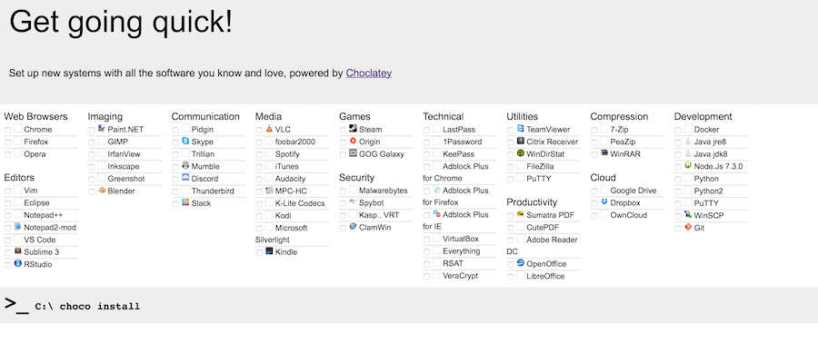
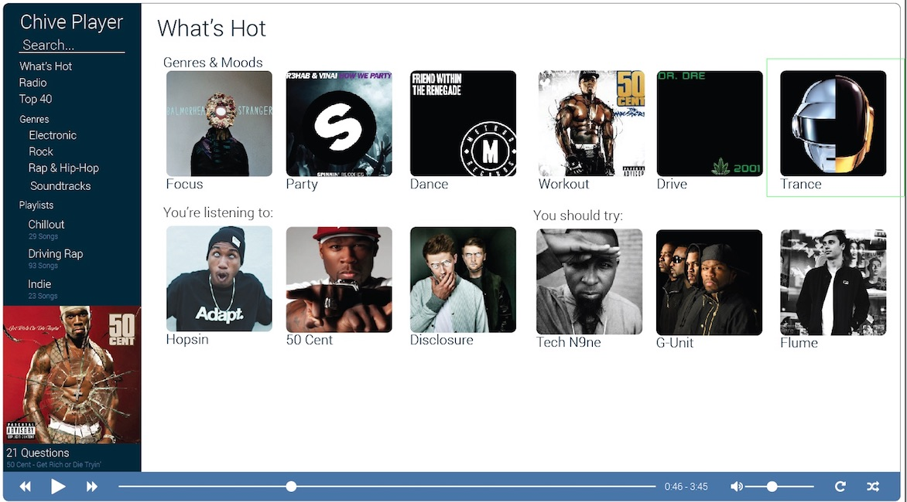

SRE @ Thought Machine. Working on Kubernetes, Kafka, High Availability DBs, and AWS Infra 🔨
Email: rorycr \~/ icloud.com
Linkedin CV: https://www.linkedin.com/in/rory-crispin/
Github https://github.com/RoryCrispin
Abstract: In this project, we explore the concept of playing Texas Hold 'em Poker without a trusted authority by using a decentralised Peer to Peer network model. We consider the applications of such a protocol in fighting internet censorship while avoiding funding corrupt casinos, and the resultant challenges involving the cryptographic protocol, the lack of trust in such a decentralised system and in the implementation of poker. The final product is a toolkit for peer to peer card games, with an implementation of Texas Hold 'em poker to demonstrate it's functionality.
ToroCam is a camera control system, which gives you unparallelled control over your SLR though an open source app and a small, Arduino compatible board. Unlike competing solutions, your phone is never tethered to the camera when using toroCam as a high performance dedicated board connects to the camera directly and the phone is only responsible for sending instructions on which triggers the board should use - allowing the system to react in microseconds to sensor values, far quicker than any dedicated mobile based solution which allows us to take precisely timed photos such as the following:


https://github.com/RoryCrispin/toroCamAndroid
Choco Quickstart is a nifty little tool that I wrote to give windows users a quick quickstart package of software for new installs using the Chocolatey package manager. 
Unlike the competition, choco quickstart makes use of a package manager; so updates to software are easy to manage. (Instead of just bundling all the installers into one runnable)
https://github.com/RoryCrispin/Chocolatey-Quickstart
Chive is a web based music streaming website that pulls data about Albums, Artists, Genres and related music from the Last.fm and MusicBrainz APIs, presenting a music-first frontend that looks up the relevant youtube videos for each song which is played in the background. 